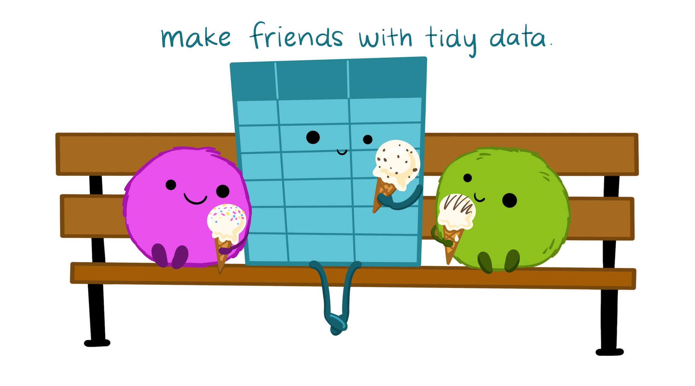
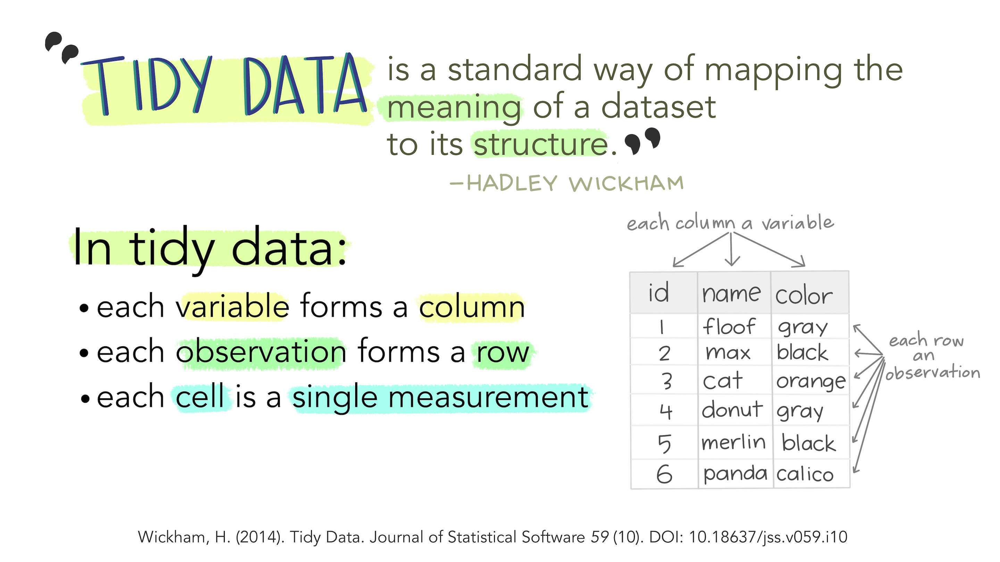

1 Welcome to open source
R Community

- Around the world
- Help!
- Post questions and help requests on Teams
- R Cheatsheets
- Troubleshooting - See Get Help!
When we use R
- To connect to databases
- To read data from all kinds of formats
- To document our work and share methods
- To create reports, dashboards, and presentations that are easy to update
Reproducible and shareable

Much like following a recipe for cookies, R scripts follow a top-to-bottom, step-by-step process. You start at the top and read our way down to the bottom.
How R is different?
R vs. Excel
- R can handle much larger data sets
- R is more flexible than Excel
- R analyses are more reproducible
- Excel is more widely used
More comparisons >
R vs. Tableau
- Tableau is primarily a data visualization software.
- R Shiny is more flexible.
- Tableau’s drag-and-drop interface makes it faster and easier for creating simple visualizations, but is not easily reproducible.
- R is 100% text-based so you can track changes over time.
#VersionControl
- R is 100% text-based so you can track changes over time.
R vs. SQL
- SQL is the language of databases.
- SQL queries are sent to a database server and processed there before sending you the data. This may be needed for very large data sets that don’t fit on your computer.
- R can use SQL queries to pull data from databases / data lakes.
- R has the
dbplyrpackage which converts R to an SQL query. - R can read data from almost anywhere (databases, flat files, web pages)
R vs. Python
- Python is a general-purpose programming language popular for doing internet things.
- R is more specifically focused on visualizations and statistical analysis.
- R is more specifically focused on visualizations and statistical analysis.
- Compared to python’s
pandas, R’s Tidyverse is more intuitive and easier to use. - Historically Python has been used with GIS software like ArcGIS, but spatial analysis with R has been growing.
R vs. SAS
- R is open-source, while SAS requires a license.
- Anyone can create and add updates to R packages at anytime.
- New features for SAS only become available when the SAS team makes it so.
2 R tour

1. Source / Code Editor
Write your scripts and comments here. The is our home and where we spend most of our time. Move your cursor to a line of code and then click [Ctrl] + [Enter] to run the code. The tabs at the top show other scripts and data you have open.
3. Environment / Workspace
This pane shows the data you have loaded, as well as the variables and objects you have created. The History tab contains the code you have run during your current session. Note the broom icon below the Connections tab. This cleans shop and clears all of the objects from your workspace.
2. R Console
This is where code is run by the computer. It shows the code that is running and the messages returned by that code. You can input code directly into the console and run it, but it won’t be saved for later. We encourage running code from a script in the code editor.
You may see some scary warnings and errors appear here after running code. Warnings are helpful messages that let you know the results may not be exactly what you expected. Errors on the other hand, mean the code was unable to run. Usually this means there was a typo, or we forgot to run an important step earlier in our script.
4. Plots and files
These tabs allow you to view and open files in your current directory, view plots and other visual objects like maps, view your installed packages, and access the help window.
The Files tab is especially handy for finding files you want and clicking them to open. You can also click the Gear and select “Show Folder in a New Window” to open your project folder.
Customize R Studio
Let’s add a little style.
Change fonts and colors
- Go to Tools on the top navigation bar
- Choose
Global Options... - Choose
Appearancewith the paint bucket - Increase the overall
Zoomto 125%
- Increase the
Editor Font size - Pick an Editor theme you like
- The default is
Textmate
- The default is

R packages 📦
What is an R package?
A package is a small add-on for R, it’s like a phone App for your phone. They add capabilities like statistical functions, mapping powers, and special charts to R. In order to use a new package we first need to install it. Let’s try it!

The tidyverse package is an umbrella of helpful packages. One of the packages it includes is the readr package, which helps import data into R in different formats. It also helps by cleaning the data of extra white space and formatting tricky date formats automatically.
Note
The 2 steps to using a package in R
install.packages("package-name")library(package-name)
Add a package to your library
- Open RStudio
- Type
install.packages("tidyverse")in the lower left console - Press Enter
- Wait two seconds
- Open the
Packagestab in the lower right window of RStudio to see the packages in your library- Use the search bar to find the
tidyversepackage
- Use the search bar to find the
Your installed packages are stored in your R library. The
Packagestab on the right shows all of the available packages installed in your library. When you want to use one of them, you load it in R.Loading a package is like opening an App on your phone. To load a package we use the
library()function. You will need to load the package everytime you open RStudio. Once you load it, the package will stay loaded until you close RStudio.
Load a package from your library
Add the line below to the top of your R script and run it to load the tidyverse. A series of messages will appear in the console informing us of the loaded packages.
🎉 Welcome to the tidyverse. We can now access ALL of the wonderful functions included in its umbrella of packages.
Here are the 4 core tidyverse packages we’ll be using in R Camp:
| Package | Uses | |
|---|---|---|
readr |
Read and write data into and out of R | |
dplyr |
Clean, transform, and summarize data | |
ggplot2 |
Plot, chart, and graph data | |
lubridate |
Get your dates and times in order |
See the full list of tidyverse packages at https://www.tidyverse.org/packages/
Help!
To view documentation about an installed R package or a function, we put a ? mark in front of it or put its name inside the help() function in quotes. We can also use the Help tab’s search bar to find a package or function we are looking to learn more about. Keep in mind when looking at documentation on a function, the examples are often found at the bottom of the page.
Here’s an example that pulls up the documentation for the package readr and the function sum().
# Help pages for a package
help("readr")
?readr
# Help page for the sum function
## Scroll to bottom of the help page to see examples
help("sum")
?sumTo look for information on packages we don’t have yet or to find more examples of how a function is used, we can search the internets with the addition of
Randgithubin front of what we’re looking for. This will often direct us to the development page for that package. For example, this search phraseR github readrwill lead us to readr’s development page with some examples of reading in data files of various formats.
3 R bakery
New project
Let’s start a new project in RStudio.
Step 1: Start a new project
- In Rstudio select File from the top menu bar
- Choose New Project…
- Choose New Directory
- Choose New Project
- Enter a project name such as
"Rcamp" - Select Browse… and choose a folder where you normally perform your work.
- Click Create Project
Step 2: Create a new R script
- File > New File > R Script
- Click the floppy disk save icon
- Give it a name:
01_bakery.Rorday1.Rwill work well
Names and things
You can assign values to objects (variables) using the .teal[left arrow].
- It looks like this:
<-
- It’s typed with a less-than sign
<followed by a hyphen-
- It’s more officially known as the assignment operator
Let’s create a baking bot
Copy the code below to your R script to create a bot called Whiskers.
Assignment operator
# Object not found?
bot
# Create the object by assigning it a value, the bot's name
bot <- "Whiskers"
botTo run a line of code in your script, put the cursor anywhere on that line and press CTRL+ENTER.
Let’s describe our baking bot with a few more objects.
age <- 1
birthday <- "Nov. 20th"
birthdate <- as.Date("2023-11-20")
has_eyes <- TRUE
has_wheels <- FALSELet’s use some objects to do math and reference their values.
# Using objects
battery <- 100
# Oh no, they're losing battery
battery - 10
battery # value in battery did not change?
# Use assignment arrow to update the object
battery <- battery - 10
# Add backup
backup_battery <- 50
total_battery <- battery + backup_battery
total_battery
# Finally
is_alive <- NA # ???Let’s give our baking bot a friend. Create a bot_friend. Go ahead and name them anything you like.
Copy objects
# To copy an object, assign it to a new name
bot_copy <- bot_friend
# Or update an object's value
bot_friend <- "Slice-n-dice"
bot_friend
# new_bot stays the same
bot_copyBreak some things
Error!
Generally, when you write a word without quotes, R will look for an object with that name in your Environment (see the area in the top-right). It will then look for a function with that name. If it doesn’t find either, it will let you know that it couldn’t find one. Try again, but add quotation marks around "Bee-bop".
Colors decoded

Blue shows the exact code you ran.
Black is the result or output of the code. In the top case, the [1] in front means there was item returned for bot, and its value was Whiskers.
Red shows Errors & Warnings. Errors mean something went so wrong it prevented your code from running. Warnings on the other hand are usually ok. They tend to inform you that the result may not be exactly what you expected. For example, some points may not be added to a map because they have missing coodinates (NA values).
Drop and remove data
You can drop objects with the remove function rm(). Try it out on some of your objects.
Click the broom icon in the top-right Environment pane to remove all of your objects.
Taste test
How can we get our bot_friend back?
Show solution
You can re-run your code anytime. You can even click the Run button at the top of the script panel to re-run ALL of your code from top to bottom.
Deleting things in R is okay
Don’t worry about deleting data or objects in R. You can always recreate them! When R loads data it reads the contents and then drops the connection to the original data. So your original data remain safe and won’t suffer any accidental changes.
By saving your analysis in an R script you can always re-run the code to reproduce any of your results. It’s common and good practice to re-run your entire R script during your analysis to catch potential errors early.
What’s a good name?
Everything has a name in R and you can name things almost anything you like, even TOP_SECRET_SHHHH... or data_data_99.
But there are a few restrictions. R doesn’t like names to include spaces or special characters found in math equations, like +, -, *, \, /, =, !, or ). And they cannot begin with a number.
Vectors: Collect multiple items
We can collect multiple values by putting them inside parenthesis with a letter “c” in front: c(). This creates a vector of items. It’s like a chain, where each additional item is connected by a comma. Think of c as standing for concatenate or as collection.
Let’s use c() to create a few vectors.
# Create a character vector called baking_bots
baking_bots <- c("Whiskers", "Baker-waker", "BB-8")
# Print the vector
baking_bots
# Create a numeric vector of the bot ages
bot_ages <- c(1, 2, NA)
# Print the ages
bot_agesR is vectorized
By default, when you pass a vector to a function in R it performs the action on each item in the vector individually. For example, if we add 5 to bot_ages, each age in the vector will be increased by 5. Let’s run a few trials.
# Add 5 to each of the ages
bot_ages + 5
# Check if each age is greater than 1
bot_ages > 1
# Check if each age is NA (missing)
is.na(bot_ages)
# Paste text to each name in baking_bots
paste(baking_bots, "the baking bot")Note
Take a look at the new additions to your Environment pane located on the top right. This window shows all of the objects we’ve created so far and the types of data they contain.

This is a great first look to see if our code ran successfully. To clean house, you can click the broom icon to sweep everything out and start with a clean slate.
Taste test
Which object name is allowed?
Hint: You can try the names in R
my favorite bot
my-bot
5bots
my_bot55
BOTS!!!
Show solution
my_bot55
4 Tidy tables

Illustration from the Openscapes blog Tidy Data for reproducibility, efficiency, and collaboration by Julia Lowndes and Allison Horst

Let’s make a tidy table with our baking bots.

A table in R is known as a data frame. We can think of it as a group of columns, where each column is a vector. Data frames in R have columns of data that are all the same length.
Let’s make a data frame that has two columns to hold the bot names and their ages.
# Character vector of baking_bot names
baking_bots <- c("Whiskers", "Baker-waker", "BB-8")
# Numeric vector of bot ages
bot_ages <- c(1, 2, NA)# Create table with 2 columns: name and age
bots <- data.frame(name = baking_bots,
age = bot_ages)
# Print the data frame to the console
bots## name age
## 1 Whiskers 1
## 2 Baker-waker 2
## 3 BB-8 NATaste test
Add a 3rd column that lists if the bot has_wheels:
- Its values are:
c(FALSE, TRUE, FALSE)
bots <- data.frame(name = baking_bots,
age = bot_ages,
has_wheels = __________________ )
bots <- data.frame(name = baking_bots,
age = bot_ages,
has_wheels = c(FALSE, TRUE, FALSE) )
Show all values in $column_name
Use the $ sign after the name of your table to see the values in one of your columns.
## [1] "Whiskers" "Baker-waker" "BB-8"## [1] NA## [1] 2Notes and comments
The italic and orange lines in the scripts above are called comments. You can add notes to your scripts with the # to make it easier for others and yourself to understand what is happening and why.
Every line that starts with a # is ignored and won’t be run as R code.
Save a table
We are ready to save our wonderful little table. We will save the data to a file with the handy function write_csv(). The code below saves the table to a CSV (comma-separated values) file named “bot_data.csv”.
## Error in write_csv(bots, file = "bot_data.csv"): could not find function "write_csv"Error!
Did you get the error could not find function "write_csv"?
Jump back to the top of your script and run the line: library(tidyverse)
Where did the file get saved?
The file is saved into our project folder by default. You can view it in the
[Files]pane to the right of the console. Click the file name and select View File. You will see a tab open with contents similar to below.
bot_data.csv
CSVs
A CSV is a simple text file that can be opened in R and most other data tools, including Excel. It looks squished together as plain text, but that’s okay! When opened in R, the text becomes a familiar looking table with columns and rows.
Read / load data
Now we can read the CSV file back into R using the read_csv() function.
## # A tibble: 3 × 2
## name age
## <chr> <dbl>
## 1 Whiskers 1
## 2 Baker-waker 2
## 3 BB-8 NA…where did the data go?
Name the data
Remember the assignment operator (the left-arrow: <-)? We use it to assign the data a name so we can reference it in our script.
# Read in the bot data and set name to "bake_bots"
bake_bots <- read_csv(file = "bot_data.csv")
# Type its name to view its contents
bake_bots## # A tibble: 3 × 2
## name age
## <chr> <dbl>
## 1 Whiskers 1
## 2 Baker-waker 2
## 3 BB-8 NAYoda says

Notice the row of <chr> letter abbreviations under the column names? These describe the data type of each column. It is a good first check when loading data to see if the data types align with the contents of each column. For example, we may want to investigate if we saw that our age column had the character data type.
<chr>stands for character vector or a string of characters. Examples: “apples”, “oranges”, “5 red apples”
<dbl>stands for a double, which is a numeric value that allows for decimal values. Examples: 5, 3.41, 1071
We’ll see more data types later on, such as dates and logical (TRUE/FALSE).
Everythings has class
In R, not just columns but everything has a data type or a “class”. When we want to investigate the type of data stored in an object we can use the class() function.
Taste test
What data type is the name column?
letters
character
TRUE/FALSE
numbers
Show solution
character
5 Sizing up the data
Before diving into a data set, we use glimpse() and several other summary functions to take a first look at the data.
Use these functions to describe our dataframe.
Data frame info
| Function | Information | |
|---|---|---|
glimpse(...) |
rows, columns, column names and a glimpse of values (from tidyverse package) |
|
names(scrap) |
column names | |
nrow(...) |
number of rows | |
ncol(...) |
number of columns | |
summary(...) |
summary of all column values (ex. max, mean, median) |
glimpse() & summary()
Let’s take a look at our bot data.
glimpse() shows the type of data in each column and shows a few sample values.
## Rows: 3
## Columns: 2
## $ name <chr> "Whiskers", "Baker-waker", "BB-8"
## $ age <dbl> 1, 2, NAsummary() gives you a quick report of your numeric data.
## name age
## Length:3 Min. :1.00
## Class :character 1st Qu.:1.25
## Mode :character Median :1.50
## Mean :1.50
## 3rd Qu.:1.75
## Max. :2.00
## NA's :1Filter data
The filter() function creates a subset of the data based on the value of one or more columns.
Let’s use it to look at the rows in the data that have an age greater than 1.
## name age
## 1 Baker-waker 2The bot with the
NA(missing) value for an age, was not included because it was unknown whether it passed the test of being greater than 1. By default, filter only keeps the rows that definitively pass all of the tests or conditions that you include. In this case, filter could not determine whether the missing value was above 1, so that row in the table was not kept or returned.
Let’s find the bots named "Whiskers".
## name age
## 1 Whiskers 1Double equals
== vs. =
We use a == (double equals sign) for comparing values. A == makes the comparison “is it equal to?” and returns a True or False answer. So the code above returns only the rows where the condition name == "Whiskers" is TRUE.
A single equals sign = is used within functions to set options, for example read_csv(file = "bot_data.csv").
It’s not a big deal if you mix them up the first time. R is often helpful and will even let you know which one is needed. Try running filter(bake_bots, name = "Whiskers").
Comparing values

We use a variety of comparisons when processing data. Sometimes we only want concentrations above a certain level, or days below a given temperature, or sites that have missing observations.
We use the Menu of comparisons below to find the data we want.
Menu of comparisons
| Symbol | Comparison |
|---|---|
> |
greater than |
>= |
greater than or equal to |
< |
less than |
<= |
less than or equal to |
== |
equal to |
!= |
NOT equal to |
%in% |
Is a value in the list: X %in% c(1,3,7) |
is.na(...) |
Is the value NA or missing? |
str_detect(col_name, "word") |
Does “word” appears in the text? |
Bake it!
Try comparing some things in the console to see if you get what you’d expect. R doesn’t always think like we do.
Filtering rows
Let’s filter the data to exclude the row with the baking bot named BB-8. Look in the comparison table above to find the NOT equal to operator. Now let’s use it to filter the data to keep only the rows with names not equal to “BB-8”.
## name age
## 1 Whiskers 1
## 2 Baker-waker 2Multiple filters
We can add multiple tests or conditions to filter() to further restrict the data we want to pull from a larger data set. Only the records that pass all of the conditions will be kept in the new data frame.
The code below filters the data to only the bots with an age equal to 1 and their name must also not be equal to “BB-8”.
If we want our original full
bake_botdata bake at anytime, we can re-run the line in our script that reads in the CSV file:bake_bots <- read_csv(file = "bot_data.csv")
Bonus sections
Create a CSV from Excel
Step 1: Open the Excel file.
Step 2: Save as CSV
- Go to File
- Save As
- Browse to your project folder
- Save as type: CSV (Comma Delimited) _(*.csv)_
- Any of the CSV options will work
- Click Yes
- Close Excel (Click “Don’t Save” as much as you need to. Excel loves long goodbyes.)
Step 3: Return to RStudio and open your project. Look at your Files tab in the lower right window. Click on the CSV file you saved and choose View File.
Success!
More on function options / arguments
Function options
Function options
Functions have options —also called arguments— that change how they behave. You can set these optins using arguments. Let’s look at a few of the arguments for the function read_csv().
Skip a row
Sometimes you may want to ignore the first row in your data file, especially an EPA file that includes a disclaimer on the first row. Yes EPA, we’re looking at you. Please stop.
Let’s open the help window with ?read_csv and try to find an argument that can help us.
There’s a lot of them! But the skip argument looks like it could be helpful. Take a look at the description near the bottom. The default is skip = 0, which reads every line, but we can skip the first line by writing skip = 1. Let’s try.
Limit the number of rows
Some types of data have last rows that show the total or report “END OF DATA”. In these cases we may want read_csv to ignore the last row of data, or for large data sets we may only want to pull in a 100 lines of data to see what you’re working with.
Let’s look through the help window to find an argument that can help us. Type ?read_csv and scroll down.
The n_max argument looks like it could be helpful. The default is n_max = Inf, which means it will read every line, but we can limit the lines we read to only one hundred by using n_max = 100.
# Read in 100 rows
small_data <- read_csv("https://mn-r.netlify.com/data/starwars_scrap_jakku.csv",
skip = 1,
n_max = 100)
# Remove the data
rm(small_data)See function options
To see all of a function’s arguments
- Type its name in the console followed by a parenthesis.
- Type
read_csv(
- Type
- Press
TABon the keyboard. - Explore the drop-down menu of the available arguments.
Got questions
Lost in an ERROR message? Is something behaving strangely and want to know why? Want ideas for a new chart?
Go to Help! for troubleshooting, cheatsheets, and other learning resources.
Key terms
| Term | Definition |
|---|---|
object
|
A variable in R that we assign different values to using the assignment operator. |
<-
|
The left-arrow or assignment operator can assign a value to a new object or update an existing object. |
package
|
An add-on for R that contains new functions someone created to help you. It’s like an App for R. |
library
|
The name of the folder that stores all your packages, and the function used to load a package. |
function
|
Functions perform an operation on your data and returns a result. The function sum() takes a series of values and returns the sum for you.
|
argument
|
Arguments are options or inputs we pass to a function to change how it behaves. The argument skip = 1 tells the read_csv() function to ignore the first row when reading in a data file. To see the default values for a function you can type ?read_csv in the console.
|